Welcome
Welcome to Mudra SDK. This document enables creating your own unique experiences based on the Mudra Band™ and Mudra API. Here we will explain how to use the band as well as interface with your device. Our API includes language bindings for Java (Android) and C# (Unity Plugin). You can find links to a sample application for each of iOS, Android or Unity under the Sample Applications section.
Device Led Status
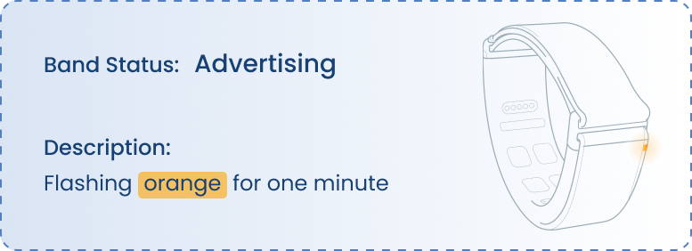 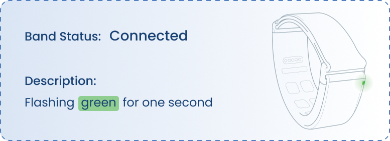 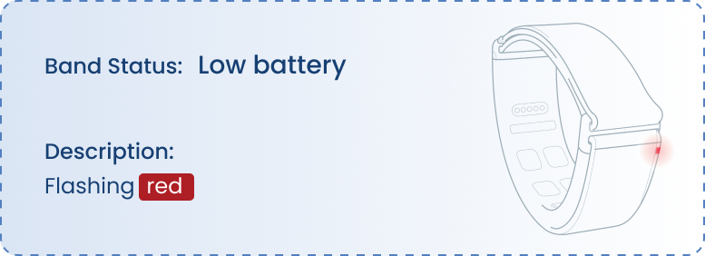 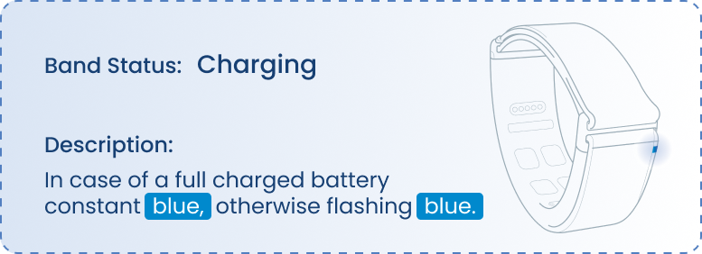 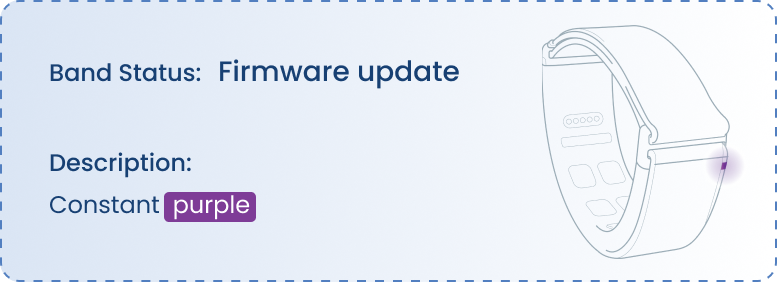
Band Wearing
To put on the wristband correctly, make sure to check whether the logo is positioned on the left or right hand.
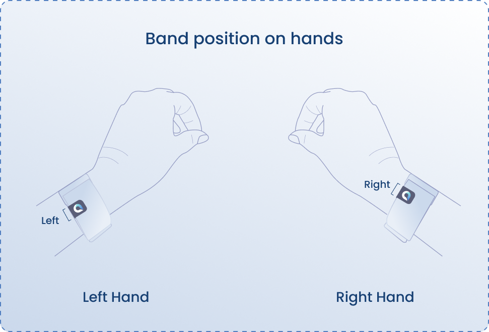
Access the API
Android
// gradle.properties file:
authToken=<Your Jitpack Token>
// settings.gradle file:
dependencyResolutionManagement {
repositoriesMode.set(RepositoriesMode.FAIL_ON_PROJECT_REPOS)
repositories {
google()
mavenCentral()
maven { url 'https://jitpack.io'
credentials { username authToken }}
}
}
// build.gradle file:
dependencies {
.
.
.
implementation 'com.github.wearable-devices:Dev_MudraAndroidSDK:1.5.11.18'
}
// manifest file:
<uses-permission android:name="android.permission.BLUETOOTH" />
<uses-permission android:name="android.permission.BLUETOOTH_ADMIN" />
<uses-permission android:name="android.permission.ACCESS_FINE_LOCATION" />
<uses-permission android:name="android.permission.ACCESS_COARSE_LOCATION" />
- To access the API you must first generate an access token.
- Navigate to https://jitpack.io/, Sign in using your GitHub account.
- Click on your Git-hub username, on top right of the page.
- Copy the access token shown on the first line and add it to your project gradle.properties file:
- Add the repository to your project settings.gradle file:
- Add BLE permission to your project manifest.xml file:
- Implement the SDK to your project gradle.build file inside the dependencies:
Unity
- Go to Mudra/Mudra Setup in the toolbar
- The Mudra Plugin depends on the new Unity input system. Clicking 'Install' will install the new input system.

- The MudraUnity Plugin currently does not support standalone builds. Please select either iOS or Android as your build target. You can use the dedicated buttons in the Mudra Setup window for this purpose.

- If the chosen build target is Android, press the 'Fix' buttons to modify the relevant build settings.

- Now, press 'EnableMudra' to activate all the MudraPlugin scripts.

Licenses
Mudra.getInstance().getLicenseForEmailFromCloud("-----@------", (success, errorResult) -> {
if( success ) {
Log.d(TAG , "licenses set successfully.");
} else {
Log.d(TAG , "failed to set licenses : " + errorResult +".");
}
});
To utilize certain features of the SDK, a license is required.
- Sign up a new user for the MudraBand application on iOS.
- Contact Tom at tom.y@wearabledevices.co.il to obtain licenses for using features in the SDK.
| License | Features |
|---|---|
| Main | Pressure, Gesture recognition, Air Mouse, ACC NORM |
| RawData | SNC, IMU GYRO, IMU ACC |
Initialization and Connection
Android
- The Android SDK supports development with Java through the implementation of the MudraDelegate Interface. Note that the API supports multiple devices; when the 'device' parameter is received in the following functions, it refers to this specific device.
- 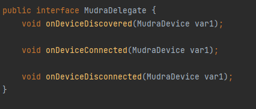
public class MainActivity extends AppCompatActivity {
private ActivityMainBinding binding;
@Override
protected void onCreate(Bundle savedInstanceState) {
super.onCreate(savedInstanceState);
binding = ActivityMainBinding.inflate(getLayoutInflater());
setContentView(binding.getRoot());
initializeMudra();
}
private void initializeMudra()
{
Mudra.getInstance().requestAccessPermissions(this);
Mudra.getInstance().getLicenseForEmailFromCloud("-----@------", (success, errorResult) -> {
if( success ) {
Log.d(TAG , "licenses set successfully.");
} else {
Log.d(TAG , "failed to set licenses : " + errorResult +".");
}
});
}
@Override
public boolean onCreateOptionsMenu(Menu menu) {
// Inflate the menu; this adds items to the action bar if it is present.
getMenuInflater().inflate(R.menu.menu_main, menu);
return true;
}
}
| Event | Description |
|---|---|
| public void onDeviceDiscovered(MudraDevice mudraDevice) | Called when a device is discoverd by the application. |
| public void onDeviceConnected(MudraDevice mudraDevice) | Called when a device is connected to the application. |
| public void onDeviceDisconnected(MudraDevice mudraDevice) | Called when a device is disconnected by the application. |
Start by initializing Mudra environment and setting up the system inside the MainActivity:
- Mudra.getInstance().requestAccessPermissions(this);
- Mudra.getInstance().getLicenseForEmailFromCloud("-------@--------", (success, errorResult) -> { });
In order to connect, disconnect, scan, stop scanning and get paired devices for a device to the application :
| Description | Function |
|---|---|
| To connect a device call the connect function | mudraDevice.connect(Context context) |
| To disconnect a device call the disconnect function | mudraDevice.disconnect() |
| To scan for a Mudra device | Mudra.getInstance().scan(Context context); |
| To stop scaning for a Mudra device | Mudra.getInstance().stopScan(); |
| To get the paried Mudra devices to the OS | Mudra.getInstance().getBondedDevices(Context context); |
//--------------------------------------------------------------------------------------------------------------------
private void setMudraDelegate() {
Mudra.getInstance().setMudraDelegate(new MudraDelegate() {
@Override
public void onDeviceDiscovered(MudraDevice mudraDevice) {
}
@Override
public void onDeviceConnected(MudraDevice mudraDevice) {
}
@Override
public void onDeviceDisconnected(MudraDevice mudraDevice) {
}
});
}
- To listen to MudraDelegate callbacks you need to set the MudraDelegate by : Mudra.getInstance().setMudraDelegate(MudraDelegate mudraDelegate);
Unity
A MudraManager is required in the scene. To create one, go to Mudra/MudraManager in the toolbar.
When the SDK connects to the device, it will create a new device in the Unity input system. To receive input values, you need to set up both an input action asset and a script to listen to the messages. The plugin package includes both by default.
These are all the input bindings for the MudraDevice. You can find them under 'Other/MudraDevice' when setting up a new action.
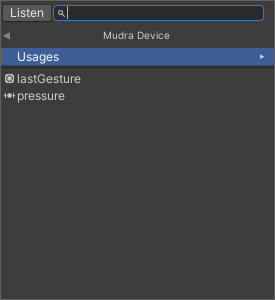
You will also need to add a PlayerInput Component to ensure the inputs function properly.
Here is an example of a fully functional MudraManager and Inputs setup.
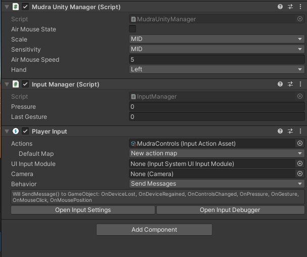
- The MudraManager serves as your connection to the SDK and it performs several important functions.
| Function | Description |
|---|---|
| public void SetAirmouseState(bool state) | Sets airmouse on/off. |
| public void SetScale(int scale) | Sets the pressure scale. |
| public void SetPressureSensitivity(int sens) | Sets the pressure sensitivity. |
| public void SetAirMouseSpeed(int speed) | Set the airmouse speed. |
| public void SetHand(int hand) | Set the main hand of the user. |
General
MudraDevice properties
mudraDevice.getBatteryLevel() // int, Returns the device's battery level.
mudraDevice.getFirmwareVersion() // String, Returns the device's firmware version, returns **empty string** in case there is no firmware version.
mudraDevice.getSerialNumber() // long, Returns the device's the device's serial number, or **0** in case there is no serial number.
mudraDevice.getDeviceNumberByName() // String, Returns the device's band number, or **0** in case there is no band number.
Once you have acquired the MudraDevice, you can request additional information from the device by accessing the following properties:
General Events
mudraDevice.setOnChargingStatusChange(new OnChargingStatusChanged() {
@Override
public void run(boolean isCharging) {
}
});
mudraDevice.setOnFirmwareVersionRead(new OnFirmwareVersionRead() {
@Override
public void run(String firmware) {
}
});
mudraDevice.setOnBatteryLevelChanged(new OnBatteryLevelChanged() {
@Override
public void run(int batteryLevel) {
}
});
Once you have obtained the MudraDevice, you can register to receive notifications for various events that occur on the device:
Charging State Change: This event is triggered whenever the MudraDevice is connected to or disconnected from the charger.
Battery Level Change: This event occurs whenever there is a change in the battery level.
Firmware Version Update: This event is triggered when the firmware version has been successfully retrieved.
Set Hand
//To set hand
mudraDevice.setHand(HandType.RIGHT);
mudraDevice.setHand(HandType.LEFT);
When the device is connected, you need to update its settings via the API depending on whether you wear the band on your left or right hand.
AI_Models
//To change the algorithm model
mudraDevice.setModelType(ModelType.NeuralClicker);
mudraDevice.setModelType(ModelType.Embedded);
It is possible to change the AI algorithem that runs "Under the hood".
- Available AI_Models :
- NeuralClicker
- Embedded
Sensors
SNC
//To enable register, for the callback.
mudraDevice.setOnSncReady(new OnSncReady() {
@Override
public void run(long timestamp, float[] data) {
// data's length is 24
// [0-7) is SNC_1
// [8-15) is SNC_2
// [15-23) is SNC_3
}
});
//To disable put null.
mudraDevice.setOnSncReady(null)
//To check if the callback is set.
mudraDevice.isOnSncCallbackSet(); // returns true in case the callback is set, false otherwise.
- Requirements :
- License - RawData
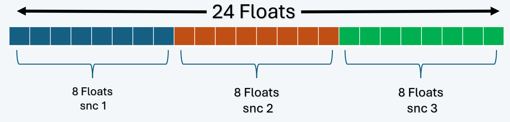
Functionality for exposing raw SNC (Surface Nerve Conductance) sensor values. This function may incur an additional fee (We will send a license with instructions for those who are interested in this functionality).
Gyroscope
//To enable register, for the callback.
mudraDevice.setOnImuGyroReady(new OnImuGyroReady() {
@Override
public void run(long timestamp, float[] data) {
// data's length is 24
// [0, 3, 6, 9 , 12, 15, 18, 21] is GYRO_1
// [1, 4, 7, 10, 13, 16, 19, 22] is GYRO_2
// [2, 5, 8, 11, 14, 17, 20, 23] is GYRO_3
}
});
//To disable put null.
mudraDevice.setOnImuGyroReady(null)
//To check if the callback is set.
mudraDevice.isOnImuGyroCallbackSet(); // returns true in case the callback is set, false otherwise.
- Requirements :
- License - RawData
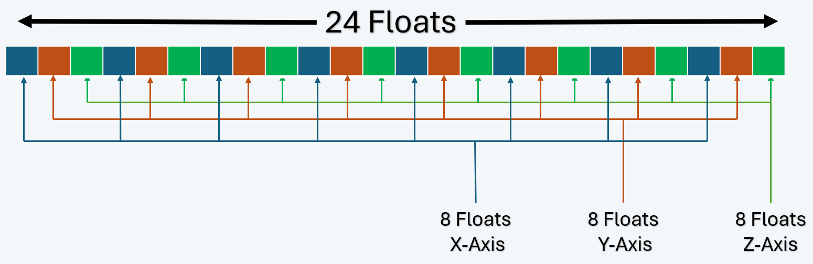
Functionality for exposing raw GYRO (Gyroscope) sensor values. This function may incur an additional fee (We will send a license with instructions for those who are interested in this functionality).
Accelerometer
//To enable register, for the callback.
mudraDevice.setOnImuAccRawReady(new OnImuGyroReady() {
@Override
public void run(long timestamp, float[] data) {
// data's length is 24
// [0, 3, 6, 9 , 12, 15, 18, 21] is ACC_1
// [1, 4, 7, 10, 13, 16, 19, 22] is ACC_2
// [2, 5, 8, 11, 14, 17, 20, 23] is ACC_3
}
});
//To disable put null.
mudraDevice.setOnImuAccRawReady(null)
//To check if the callback is set.
mudraDevice.isOnImuAccRawCallbackSet(); // returns true in case the callback is set, false otherwise.
- Requirements :
- License - RawData
Functionality for exposing raw ACC (Accelerometer Characterization Capability) sensor values. This function may incur an additional fee (We will send a license with instructions for those who are interested in this functionality).
Accelerometer Norm
//To enable register, for the callback.
mudraDevice.setOnImuAccNormReady(new OnImuAccNormReady() {
@Override
public void run(long timestamp, float[] floats) {
}
});
//To disable put null.
mudraDevice.setOnImuAccNormReady(null)
//To check if the callback is set.
mudraDevice.isOnImuAccNormCallbackSet(); // returns true in case the callback is set, false otherwise.
- Requirements :
- License - Main
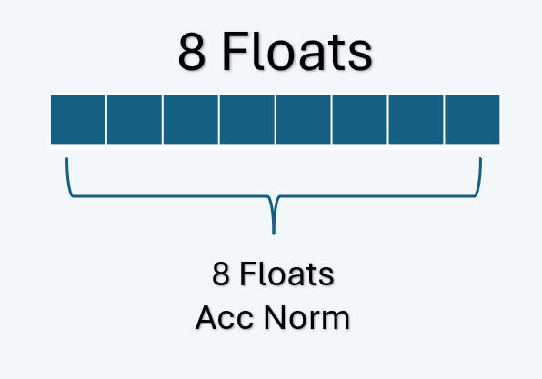
Returns the Root Mean Square (RMS) value of the three-axis (X, Y, Z) acceleration measurements, which are normalized for gravity. Removing the effects of gravity from the acceleration data, providing a more accurate representation of the band motion in three dimensions.
Features
Pressure Level
//To enable register, for the callback.
mudraDevice.setOnPressureReady(new OnPressureReady() {
@Override
public void run(float pressure) {
}
});
//To disable put null.
mudraDevice.setOnPressureReady(null)
//To check if the callback is set.
mudraDevice.isOnPressureReadySet(); // returns true in case the callback is set, false otherwise.
In order to esstimate the amount of finger tip pressure, use the descriped API. The returned pressure parameter indecates 1.0 for the most amount of pressure while 0.0 indecates the lowest.
Gesture Recognition
//To register for tap event:
mudraDevice.setOnAirMouseButtonChanged(new OnAirMouseButtonChanged() {
@Override
public void run(AirMouseCommand command) {
// buttonEvent == AirMouseCommand.Release, in case release event
// buttonEvent == AirMouseCommand.Press, in case press event
}
});
To register for an event that is triggered whenever the chosen model detects a click or release, you can use the following approach:
Navigation
mudraDevice.setAirMousePointerActive(true); // to enable the air-mouse pointer
mudraDevice.setAirMousePointerActive(false); // to disbale the air-mouse pointer
//In order to check if the air-mouse pointer is enabled
mudraDevice.isAirMousePointerActive()
- Requirements :
- License - Main
To activate the Air-Mouse-Pointer, you need to execute the following command:
HID commands
Mouse Left Button Action
//To trigger a "Press" or "Release" action in your application, you can use the appropriate API methods provided by the mudraDevice. Here's how you can implement them:
mudraDevice.sendAirMouseButton(AirMouseCommand.Release); // This line sends a release command
mudraDevice.sendAirMouseButton(AirMouseCommand.Press); // This line sends a press command
Using mouse profile, supporting left button press and release.
Experiences
Air-Touch
mudraDevice.setAirMousePointerActive(true); // To activate the Air-Mouse-Pointer
mudraDevice.setAirMousePressReleaseActive(false); // To activate press and release
mudraDevice.setAirMousePointerActive(true); // To deactivate the Air-Mouse-Pointer
mudraDevice.setAirMousePressReleaseActive(false); // To deactivate press and release
//To verify if these commands are enabled, execute the following command:
mudraDevice.isAirMousePointerActive()
mudraDevice.isAirMousePressReleaseActive()
Requirements :
- License - Main
The "Air Touch" experience encompasses the following features:
- Navigation: Utilizes a pointer mode for on-screen navigation.
- Gesture Recognition: Recognizes tapping gestures for interaction.
- Pressure Level: There is no pressure sensitivity involved in the interaction.
- HID Commands: Using mouse profile, supporting left button press and release.
Enable or disable the air touch.
When the Air-Touch is enabled, the device start to simulate mouse actions like clicks or movements. The device then sends the clicks and movement to any operating system using the HID (Human Interface Device) protocol.
Sample Applications
- Android Sample Application gitHub : AndroidAppExample
Troubleshooting
| Problem | OS | Solution |
|---|---|---|
| Mudra does not connect to host device | Android | Check your Bluetooth version, we recommend 4.2 and above. |
| Mudra does not connect to host device | All | Check if your device's LED flashes red, if so recharge (LED will flash blue) |
| Mudra gestures are not correctly recognize | All | Make sure that the electrodes are in contact with your skin. |
| Missing dll error | Unity | Make sure installation created an environment variable path and unpacked the dlls inside. If not, try running Setup.msi as administrator |
Please contact support@wearabledevices.co.il for any additional questions or suggestions.